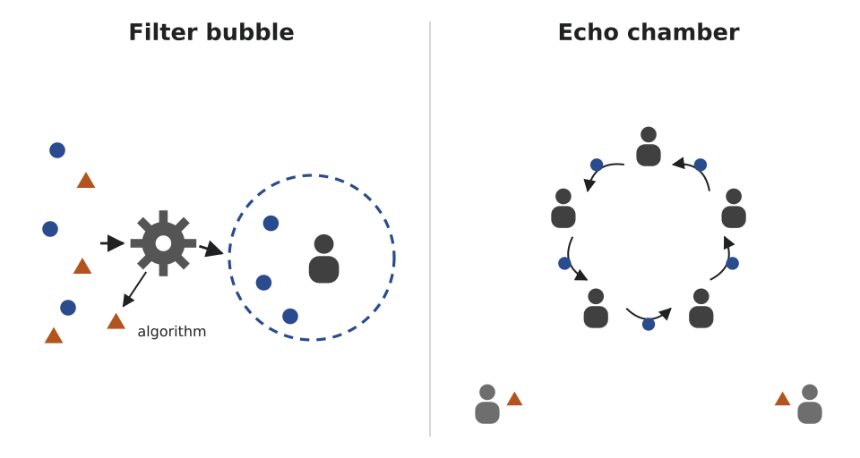

Wolfgang_Hasselmann
Wolfgang_Hasselmann
Good morning!
Nur das Schöne wird die Welt retten!
Fjodor Dostojewski
Nicht verzagen, Doc Alvers fragen!
Informatik — Grundkurs 11
Sicher in sozialen Netzwerken
Was ich preisgebe, wer mitliest — und wie ich mich und andere schütze
Nicht verzagen, Doc Alvers fragen!
Wo wir stehen
Bisher: Bedrohungen und Schutzziele — meist aus Sicht von Betrieben und Schulen
Heute geht es um euch: eure Profile, eure Fotos, eure Kontakte
Soziale Netzwerke leben von Daten — die meisten davon liefert ihr selbst
Leitfrage: Was kann jemand über mich herausfinden — und wie begrenze ich das?
Nicht verzagen, Doc Alvers fragen!
Kapitel 01
Was ich preisgebe
Profile, Fotos, Metadaten
Nicht verzagen, Doc Alvers fragen!
Einmal im Netz, immer im Netz
Faustregel: nur veröffentlichen, was auch in einigen Jahren noch öffentlich sein darf
Löschen ist keine Garantie: Kopien, Screenshots und Archive bleiben
Sichtbarkeitseinstellungen ändern daran wenig — jeder Betrachter kann kopieren
Deshalb wirkt Sparsamkeit vor dem Posten am besten
Nicht verzagen, Doc Alvers fragen!
Mehr verraten als gedacht
| Was | verrät möglicherweise |
|---|---|
| Metadaten im Foto | Aufnahmezeit, Gerät, oft den Aufnahmeort |
| Hintergrund im Profilbild | Schulkleidung, Gebäude, Straßenschilder |
| Wohnadresse im Profil | wo man mich im echten Leben findet |
| viele kleine Angaben | zusammen ein vollständiges Bild |
Viele Netzwerke entfernen Metadaten beim Hochladen — aber nicht alle
Ein neutraler Hintergrund löst das Problem mit dem Profilbild
Nicht verzagen, Doc Alvers fragen!
Datenverknüpfung und Doxing
Einzeln harmlose Angaben ergeben verknüpft ein Persönlichkeitsprofil
Hobby hier, Schule dort, Urlaubsfoto da — zusammen weiß man, wer, wo, wann
Doxing: private Daten einer Person gezielt sammeln und veröffentlichen
Ziel ist meist Einschüchterung — Sparsamkeit und getrennte Konten erschweren es
Nicht verzagen, Doc Alvers fragen!
Kapitel 02
Konto und Kontakte
Einstellungen in eigener Hand
Nicht verzagen, Doc Alvers fragen!
Sicherheitseinstellungen prüfen
Standardeinstellungen sind oft die offensten
Sinnvoll für private Konten: Beiträge nur für bestätigte Kontakte sichtbar
Alles verbergen macht das Konto sinnlos — ganz öffentlich macht es angreifbar
Zwei-Faktor-Authentisierung: Ein gestohlenes Passwort allein reicht nicht mehr zur Übernahme
Gegen Inhalte hilft sie nicht — aber gegen die häufigste Art, Konten zu übernehmen
Nicht verzagen, Doc Alvers fragen!
Kontakte und Konten
Freundschaftsanfrage von Unbekannten: Profil prüfen, im Zweifel ablehnen
Gefälschte Profile nutzen gern gemeinsame Kontakte als Türöffner
Private und schulische Konten trennen — sonst vermischen sich Inhalte und Kontakte
„Mit Konto XY fortfahren“: Der Dienst erhält Daten des verknüpften Kontos
Wird das Hauptkonto übernommen, fallen alle verknüpften Dienste mit
Nicht verzagen, Doc Alvers fragen!
Kapitel 03
Mobbing und Grooming
Erkennen, sichern, Hilfe holen

Nicht verzagen, Doc Alvers fragen!
Cybermobbing
Cybermobbing: wiederholtes Schikanieren einer Person über digitale Kanäle
Kennzeichen: Wiederholung und ein Machtgefälle — ein einmaliger Streit ist es noch nicht
Öffentlichkeit und Dauerhaftigkeit verschärfen es: Zu Hause ist nicht Schluss
Erste Reaktion: Beweise sichern (Screenshots mit Datum) und nicht antworten
Das eigene Konto zu löschen, vernichtet die Beweise
Nicht verzagen, Doc Alvers fragen!
Hilfe holen
Vertrauenspersonen in der Schule und die Meldewege der Plattform nutzen
Bei Straftaten die Polizei: Beleidigung, Bedrohung und Verleumdung sind strafbar
Anonym und kostenlos: die Nummer gegen Kummer, 116 111
Wer Mobbing mitbekommt: nicht mitmachen, melden, den Betroffenen zur Seite stehen
Alleinbleiben ist der schlechteste Weg
Nicht verzagen, Doc Alvers fragen!
Grooming erkennen
Grooming: Erwachsene knüpfen gezielt Kontakt zu Minderjährigen — mit sexueller Absicht
Der Kontakt beginnt harmlos und wird schrittweise vertraulicher
Warnzeichen: Bitte um Geheimhaltung und Wechsel in einen privaten Kanal
Dann: Kontakt abbrechen, Beweise sichern, einer Vertrauensperson Bescheid sagen
Gegenüber Kindern ist schon die Anbahnung übers Netz strafbar
Nicht verzagen, Doc Alvers fragen!
Kapitel 04
Was der Feed mir zeigt
Empfehlungen, Empörung, Kettenbriefe

Nicht verzagen, Doc Alvers fragen!
Empfehlungssysteme
Sie zeigen bevorzugt Inhalte, die zum bisherigen Verhalten passen
Die Auswahl steuern Verweildauer und Klicks — Widersprechendes erscheint seltener
Gemessen wird Beteiligung, nicht Richtigkeit
Empörung erzeugt zuverlässig Reaktionen — deshalb ist Empörendes besonders sichtbar
Gegenmittel: bewusst andere Quellen suchen und vor dem Teilen kurz prüfen
Nicht verzagen, Doc Alvers fragen!
Kettenbriefe und fremde Fotos
Kettenbrief: eine unbelegte Behauptung, die durch Weiterleiten Reichweite gewinnt
Erkennungszeichen: der Aufruf zum Weiterleiten — echte Warnungen brauchen das nicht
Fremde Fotos teilen: Urheberrecht am Bild und Recht am eigenen Bild der Abgebildeten
Die Erlaubnis des Fotografen genügt also nicht — bei Minderjährigen fragt man auch die Eltern
Nicht verzagen, Doc Alvers fragen!
Jugend- und Verbraucherschutz
In die Datenverarbeitung solcher Dienste willigt man in Deutschland ab 16 selbst ein — jünger nur mit den Eltern
Seit 2024 gilt EU-weit der Digital Services Act: keine Werbung für Minderjährige auf Grundlage von Profilen
Sehr große Plattformen müssen einen Feed ohne Profiling anbieten
„Kostenlos“ heißt oft: Man bezahlt mit Daten
Nicht verzagen, Doc Alvers fragen!
Was ich nicht veröffentliche, kann niemand missbrauchen — erst sparsam sein, dann Einstellungen prüfen, und bei Mobbing oder Grooming: Beweise sichern, Hilfe holen.
Merksatz
Nicht verzagen, Doc Alvers fragen!
Fun Facts
Metadaten stehen im EXIF-Format in der Bilddatei — dort ist auch Platz für GPS-Koordinaten
Das Recht am eigenen Bild steht im Kunsturhebergesetz von 1907 — älter als der Rundfunk
Die Wayback Machine des Internet Archive sammelt seit 1996 öffentliche Webseiten — auch längst gelöschte
Doxing kommt von engl. „docs“: Dokumente über jemanden ausgraben und verbreiten
Nicht verzagen, Doc Alvers fragen!
Eure Aufgabe
Einstellungs-Check am eigenen Smartphone: Wer sieht Beiträge, Freundesliste, Standort?
Eure Daten bleiben bei euch — ihr notiert nur, was ihr geändert habt
Placemat zu viert: Was schützt mich? Erst still schreiben, dann in der Mitte einigen
Plakat: zehn Handlungsempfehlungen für Jüngere — mit Material von klicksafe
Zum Schluss: Aufgaben (20) auf der Planseite — Lösung pro Aufgabe zum Aufklappen
Nicht verzagen, Doc Alvers fragen!